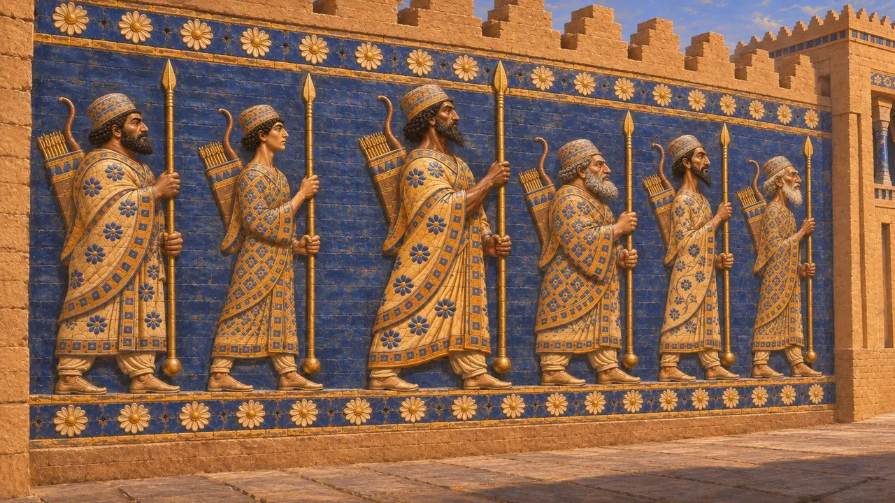
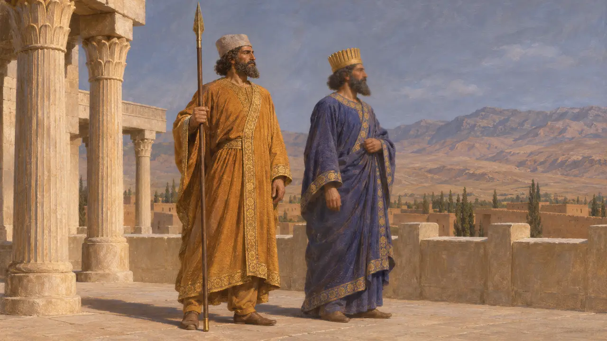
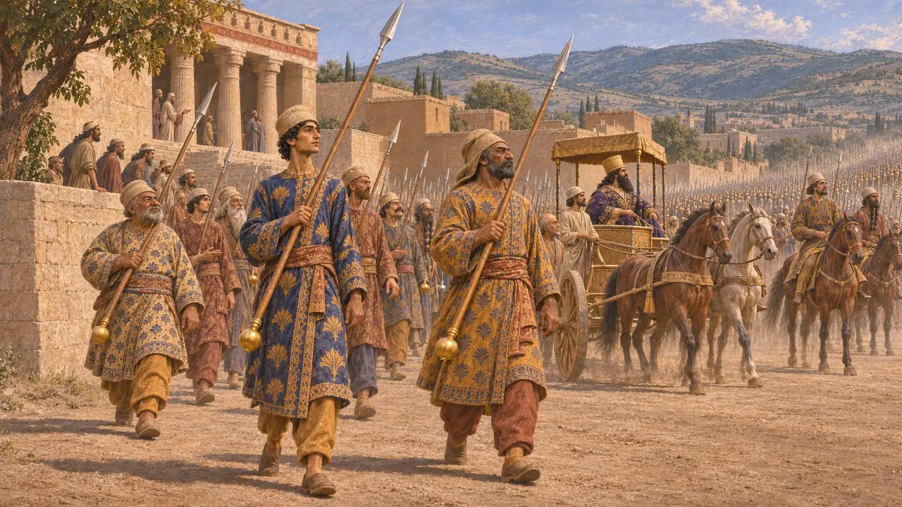
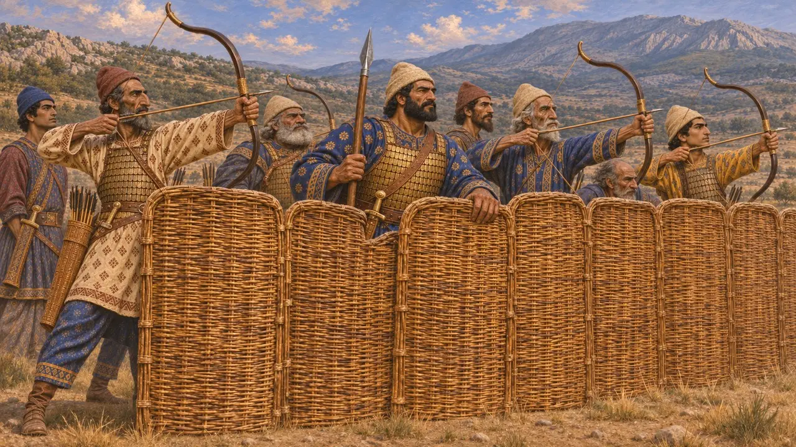
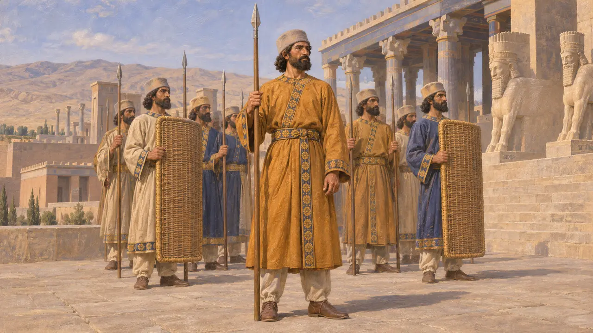

Энциклопедия › Воины и корабли

Царский копейщик
Персидский пехотинец царского войска и стражи, около 530–479 гг. до н. э.
В игре: Уровень 1: Гробница основателя
Царские копейщики — персидские пехотинцы, шедшие в походе ближе всех к государю и нёсшие стражу у его дворцов. Персидские рельефы и глазурованные кирпичи изображают их рядами, с копьями, снабжёнными круглыми противовесами, а Геродот описывает, как персидская пехота сражалась из-за стены плетёных щитов. Вместе эти источники дают представление о ядре пехоты, на которое опирались ахеменидские цари.
В игре: В игре Царский копейщик показан как обученный щитоносец с плетёным щитом. Здесь соединены две вещи, которые источники различают: дворцовая стража рельефов, часто с луками, и пехота Геродота, сражавшаяся за стеной из щитов.

Стражи в камне и глазурованном кирпиче
Свидетельства эпохиНа лестницах ападаны в Персеполе изображены длинные ряды стражников в персидской и мидийской одежде с копьями, поставленными вертикально, с шаром на нижнем конце древка. Некоторые несут также лук и колчан, некоторые — большие щиты. В Сузах панно из глазурованного кирпича из дворца Дария изображают похожих копейщиков в богато узорчатых одеяниях, каждый с копьём и луком на плече.
E. F. Schmidt, Persepolis I, 1953; P. O. Harper, J. Aruz and F. Tallon (eds), The Royal City of Susa, 1992

Титул копьеносца
Свидетельства эпохиНосить копьё Царя было высокой честью. В Накше-Рустаме надпись рядом с фигурой на гробнице Дария называет Гобрия, патисхорийца, копьеносцем Царя. Это показывает, что копьё означало близкую службу правителю, а не только оружие воина.
DNc

Копейщики вокруг Ксеркса
Античное свидетельствоГеродот описывает порядок войска Ксеркса при выступлении из Сард в 480 году до н. э. Рядом с колесницей Царя шла тысяча копейщиков, отобранных из лучших и знатнейших персов; их копья оканчивались внизу золотыми яблоками. За ними следовали отборные всадники, а затем десять тысяч пеших воинов, чьи копья вместо подтоков оканчивались гранатами — золотыми у внешней тысячи и серебряными у остальных. О том, как их обучали и чем им платили, он ничего не сообщает.
Herodotus 7.40-41

Плетёные щиты и стена щитов
Античное свидетельствоПо словам Геродота, персидские пехотинцы носили мягкие войлочные шапки, туники с рукавами и чешуйчатые панцири, а вооружены были плетёными щитами, короткими копьями, большими луками и кинжалами. При Платеях в 479 г. до н. э., сообщает он, персы составили щиты в заграждение и стреляли из-за него. Когда спартанцы прорвались, персы бились храбро, но не имели тяжёлого вооружения и не владели искусством ближнего боя.
Herodotus 7.61; Herodotus 9.61-63

Гвардия, Бессмертные и линейные войска
СпорныйИсторики до сих пор спорят о том, как соотносились эти группы. Одни отождествляют стражей с рельефов с десятью тысячами Бессмертных Геродота, другие видят в них отдельную царскую гвардию или просто идеальный образ персидского войска. Слово «спарабара», которым сегодня часто называют пехоту со щитами, — современный термин, образованный от древнеперсидского слова «щит»; как название отряда в сохранившихся текстах оно не засвидетельствовано.
Herodotus 7.83; P. Briant, From Cyrus to Alexander, 2002
Источники
- Herodotus 7.40-41, 7.61, 7.83, 9.61-63
- E. F. Schmidt, Persepolis I, 1953
- DNc
- P. O. Harper, J. Aruz and F. Tallon (eds), The Royal City of Susa, 1992
- P. Briant, From Cyrus to Alexander, 2002
- J. Curtis and N. Tallis (eds), Forgotten Empire, 2005